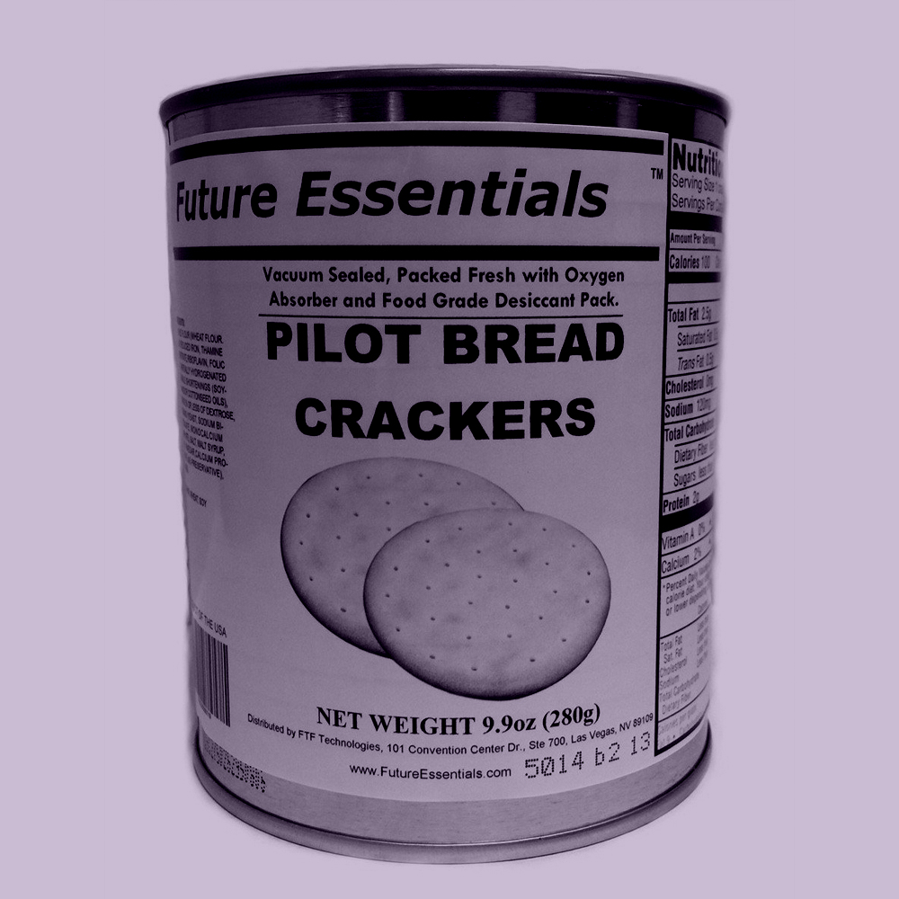
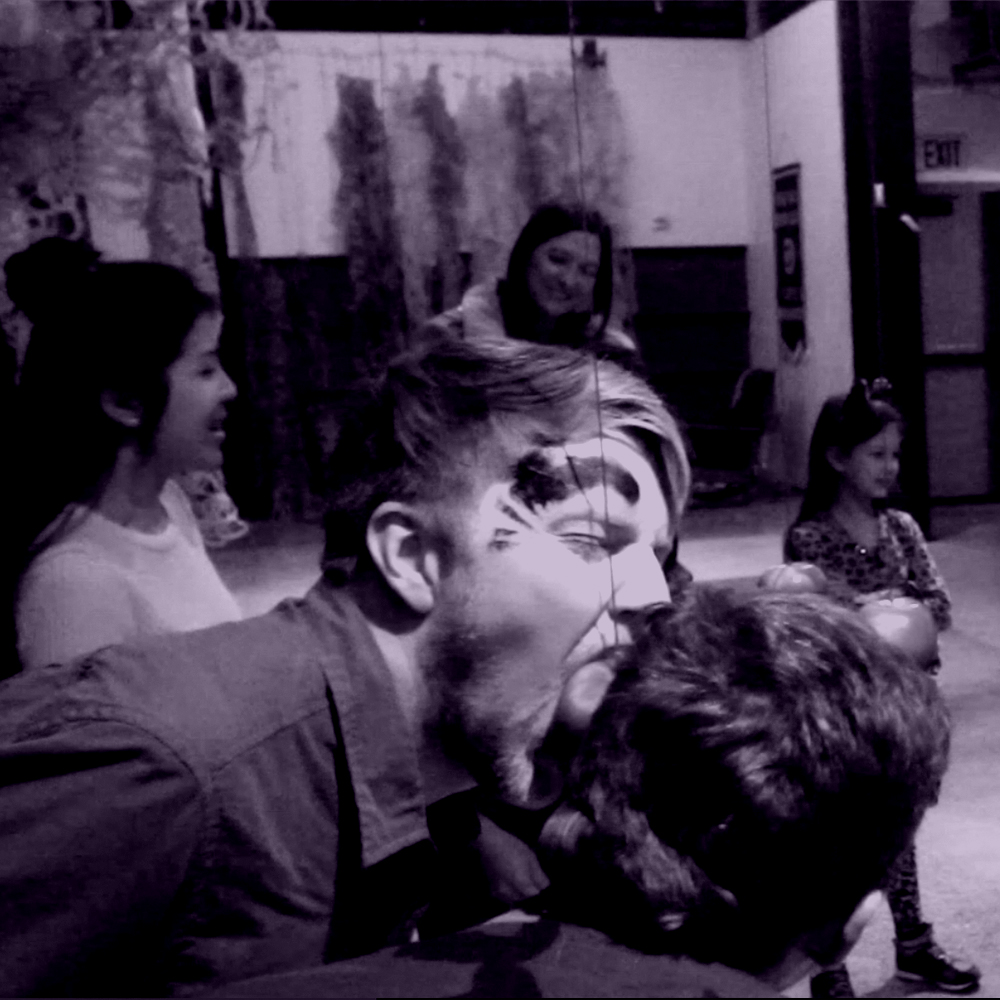

David Jimison, "Prepper Social Club"
PREPPER SOCIAL CLUB MEETINGS
- Oct 7, 7PM - "Rations Party"
- Nov 4, 7PM - "Fireside Karaoke"
- Nov 12, 12PM - "When Seattle’s a Rockin’, Please Come a Knockin’"
Prepper Social Club will be a series of events in which the public is invited to discuss strategies for dealing with catastrophe. Preppers are haunted by the prospect of the future, as much if not more so than by the events of the past. They are people that anticipate catastrophes and spend their time actively preparing for them – building fall out shelters, procuring gold, etc. The Prepper Social Club will host seance-like gatherings where participants evoke post catastrophe conditions and create structures and networks built around phantom futures. There will be three 2-hour workshops: A Rations Party, Fireside Karaoke, and When Seattle’s a Rockin’, Please Come a Knockin.
ABOUT DAVE JIMISON
Dave creates interactive immersive installations that elicit new behaviors, and thereby experiences, to the people embedded within them, engaging them in momentary, festive, and outlandish landscapes. His work is an intervention into the everyday via collective engagement with a celebratory moment both absurd and thoroughly other from our normal existence.

